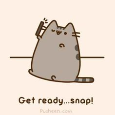

<div class="dashboard" ng-controller="DashController as picture">
	
	<p>
		etape 1 :
	</p>
	<button id="troissecondes" ng-click="troissecondes()">3</button>
	<button id="cinqsecondes" ng-click="cinqsecondes()">5</button>
	<button id="dixsecondes" ng-click="dixsecondes()">10</button>
	<p id="someBla">
		etape 2 :
	</p>
	<button id="newPicture" ng-click="picture.camera()">Nouvelle photo</button>
	<button id="list" ng-click="list()">Liste d'amis</button>
	<button id="recus" ng-click="recus()">Photo reçus</button>
</div>